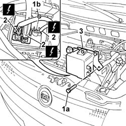

2135B42 REVERSING LIGHT SWITCH - R + R
- Path
- Procedures > 21 GEARBOX UNIT > 2135 AUTOMATIC TRANSMISSION EXTERNAL CONTROLS > 2135B AUTOMATIC TRANSMISSION ELECTRICAL CONTROLS > 2135B42 REVERSING LIGHT SWITCH - R + R
- Kind
- repair procedure (removal / refitting; the operation number is the code)
- Applies to
- engines: 1.3 JTD 16v; all production periods
- Interactive page
- https://sloeber94.github.io/elrnDB-fPnd/en/#/2752696
Applies to: engines: 1.3 JTD 16v; all production periods
 Removing
Removing
 Refitting
Refitting
Applies to: engines: 1.3 JTD 16v; all production periods